Mapping species distribution
Mauro Lepore
2017-11-01
This vignette show you how to map species distribution with map_sp() and map_sp_pdf() from the forestr package. Let’s load forestr:
GITHUB_PAT <- "your token"
# install_github("forestgeo/forestr", auth_token = GITHUB_PAT)
library(forestr)
# Also using the package dplyr for easier data manipulation;
# it is the most downloaded R package (https://goo.gl/bXBmkS).
library(dplyr)
# Print only a few rows of tibbles (modern dataframes) to save space
options(dplyr.print_min = 6, dplyr.print_max = 6)forestr has some data that you will use for examples:
example_data <- dplyr::as_tibble(forestr::bci12t7mini)
# Let's find the top-3 most abundant species
sp_n <- count(example_data, sp)
arranged <- arrange(sp_n, desc(n))
sp_top3 <- head(arranged, 3)$sp
sp_top3
#> [1] "hybapr" "faraoc" "des2pa"
# For a this example, let's filter the data set to keep only the top-3 species
census <- filter(example_data, sp %in% sp_top3)
census
#> # A tibble: 315 x 20
#> treeID stemID tag StemTag sp quadrat gx gy MeasureID
#> <int> <int> <chr> <chr> <chr> <chr> <dbl> <dbl> <int>
#> 1 8651 1 010554 hybapr 4811 974 227.6 6832
#> 2 9480 1 011419 faraoc 4814 977 290.0 7373
#> 3 10179 11 012145 <NA> hybapr 4819 979 395.3 7898
#> 4 15240 NA 019314 <NA> hybapr 4223 845 461.2 NA
#> 5 15680 NA 019758 <NA> hybapr 4824 979 483.4 NA
#> 6 15888 NA 020180 <NA> faraoc 4701 950 29.8 NA
#> # ... with 309 more rows, and 11 more variables: CensusID <int>,
#> # dbh <dbl>, pom <chr>, hom <dbl>, ExactDate <chr>, DFstatus <chr>,
#> # codes <chr>, nostems <dbl>, date <dbl>, status <chr>, agb <dbl>The first section shows you how to explore your data quickly and yet get good quality maps with the available defaults. The second section shows you how to customize you maps; It is organized to show first the changes you may need for exploring your data, and second the changes you may need to precisely communicate your results.
Exploring Data Quickly: Using Defaults
Species Distribution
Although the output of map_sp() and map_sp_pdf() is printed to different devices – i.e, the screen or a .pdf file – those functions are almost identical. They are documented jointly and share the same arguments.
?map_sp
# Or
?map_sp_pdfNotice that only the first two arguments of these functions are strictly necessary.
# Print to screen
map_sp(census, c("hybapr", "faraoc"))
#> $hybapr
#>
#> $faraoc
# Save in a .pdf (defaults to working directory)
map_sp_pdf(census, c("hybapr", "faraoc"))
#> $hybapr
#>
#> $faraoc
#> Saving as map.pdf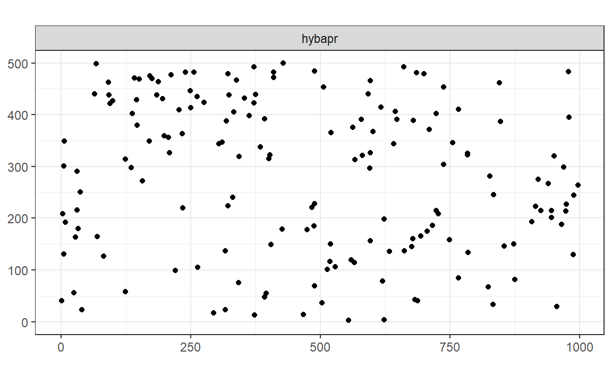 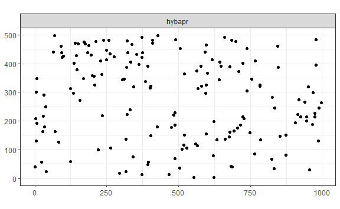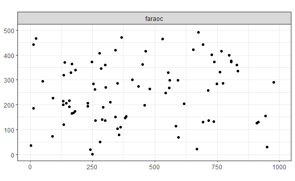
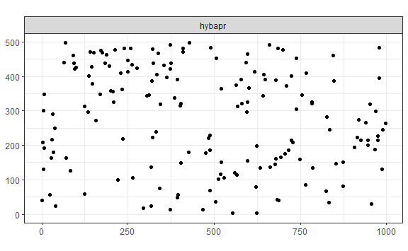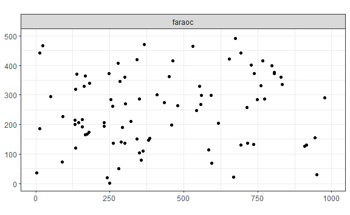
Keep in mind that your census data must have specific variable-names:
# Show behaviour with wrong name
with_wrong_name <- rename(census, SP = sp)
# This will fail because the data set has name `SP`, not `sp`
map_sp(with_wrong_name, c("hybapr", "faraoc"))
#> Error: Check that your data contains these names: gx, gy, spElevation
You may have elevation data from your site.
my_elev <- bciex::bci_elevation
my_elev
#> # A tibble: 20,301 x 3
#> x y elev
#> * <int> <int> <dbl>
#> 1 0 0 121
#> 2 0 5 121
#> 3 0 10 121
#> 4 0 15 121
#> 5 0 20 121
#> 6 0 25 123
#> # ... with 2.03e+04 more rowsNote that the elevation data set must have very specific variable names; or it will fail:
# This will fail because the names of `my_elev` are not correct
map_sp(census, c("hybapr", "faraoc"), elevation = my_elev)
#> Error: Check that your data contains these names: gx, gy, elevIf necessary, rename your variables:
# Renaming data and trying again
elev <- rename(my_elev, gx = x, gy = y)
map_sp(census, c("hybapr", "faraoc"), elevation = elev)
#> $hybapr
#>
#> $faraoc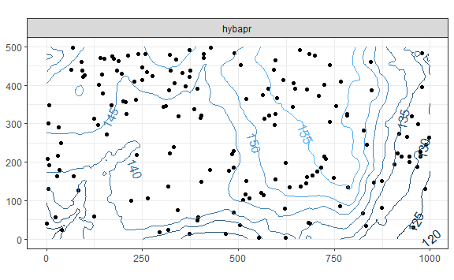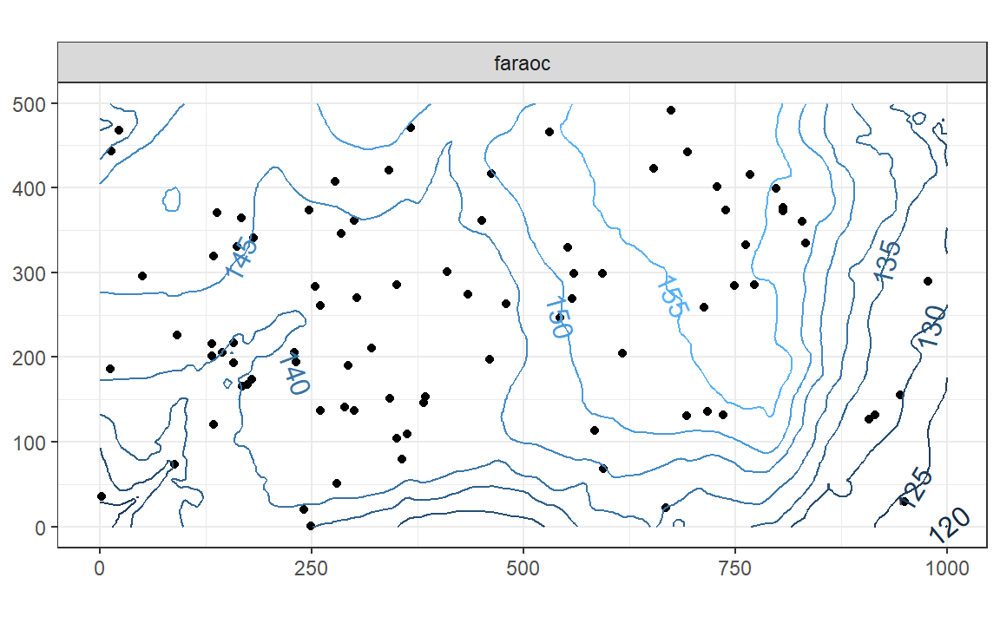
Customizing Your Maps
Eventually you may want to customize the output of map_sp() and map_sp_pdf(). When you are exploring your data you may want to quickly change a few things such as the some property of the points, the general theme of your map; or the colour of the elevation lines. And eventually you may want to fine tune your map for publication. This section helps you to do all of that.
Most Common Changes
Changing Ponint Properties
Recall that both map_sp() and map_sp_pdf() have the same arguments; the argument ..., in particular, allows you to pass arguments to ggplot2::geom_point(). Read ?ggplot2::geom_point() to learn all your options; here you can see some common ones:
map_sp(census, "hybapr",
# Arguments passed to ggplot2::geom_point()
size = 4, shape = 22, fill = "green", colour = "black", stroke = 2)
#> $hybapr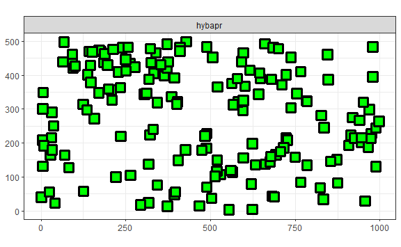
Changing the Theme
You can change the overall look of your map with a pre-set ggplot theme. Learn about the available themes by reading ?ggplot2::theme_bw().
map_sp(census, "hybapr", theme = ggplot2::theme_classic())
#> $hybapr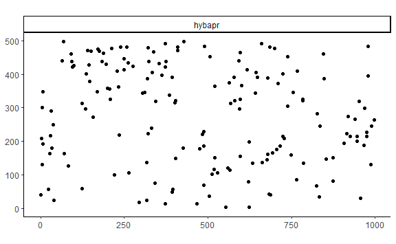
Changing the Elevation Lines
You can also customize the elevation lines. This example shows all the available options: * Change line size; * set colours to represent low and high elevation; * set the number of intervals in which the elevation variable is to be cut (note that the cut results in ugly numbers, with many decimals).
map_sp(census, "hybapr",
elevation = elev, line_size = 1, low = "red", high = "blue", bins = 2)
#> $hybapr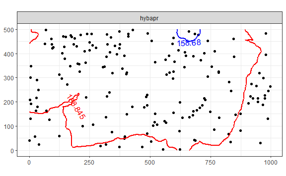
Less Common Changes
Here are some changes that you may need less often but are still good to keep in mind.
Change File Name
When printing to .pdf you can provide a custom file name (and path to a directory); but note the file name must end in .pdf or it will be replaced by a default name:
spp <- c("hybapr", "faraoc")
map_sp_pdf(census, spp, elevation = elev, file = "bad-name1")
#> Warning in check_file_extension(file): File extension should be .pdf.
#> * Replacing given file name by default file name
#> $hybapr
#>
#> $faraoc
#> Saving as map.pdf
map_sp_pdf(census, spp, elevation = elev, file = "bad-name2.png")
#> Warning in check_file_extension(file): File extension should be .pdf.
#> * Replacing given file name by default file name
#> $hybapr
#>
#> $faraoc
#> Saving as map.pdf
map_sp_pdf(census, spp, elevation = elev, file = "good-name.pdf")
#> $hybapr
#>
#> $faraoc
#> Saving as good-name.pdf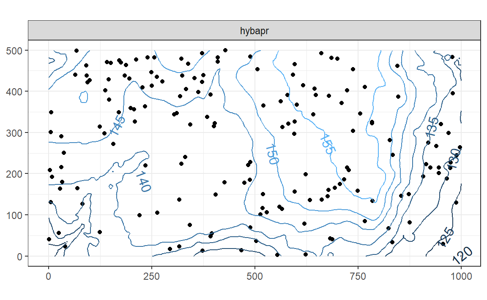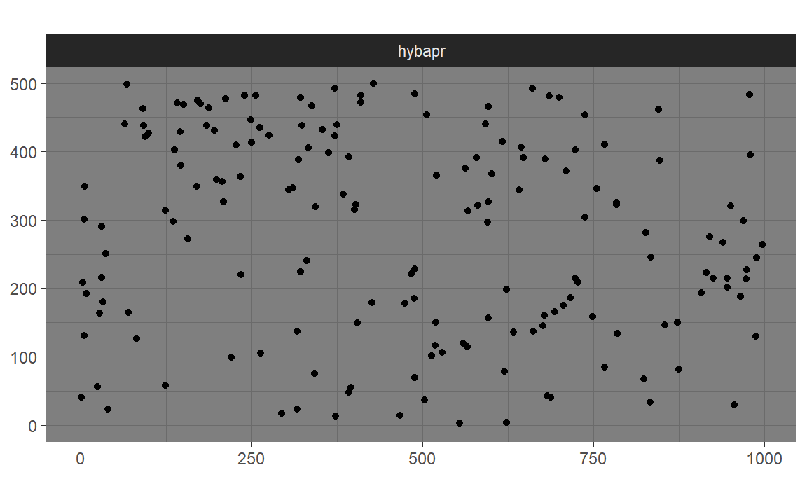
 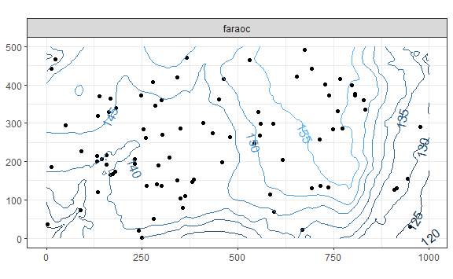
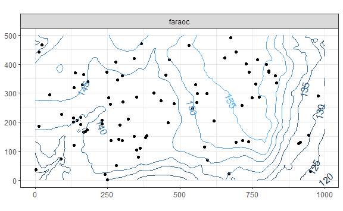
Change x and y Limits
Occasionally you may need to change the map limits. The map limits default to the range 0-max, where max is the maximum value of the variable gx or gy in the census data.
In the rare case where no stem occurs at the maximum limits of your plot, the default would result in a map that spans less than the defined limits of your data.
# Fake case: The plot maximum-limits are gx = 1000 and gy = 500; but all stems
# in the census occurr at lower gx and gy limits
rare_case <- filter(census, gx < 800, gy < 200)
map_sp(rare_case, unique(rare_case$sp))
#> $hybapr
#>
#> $faraoc
#>
#> $des2pa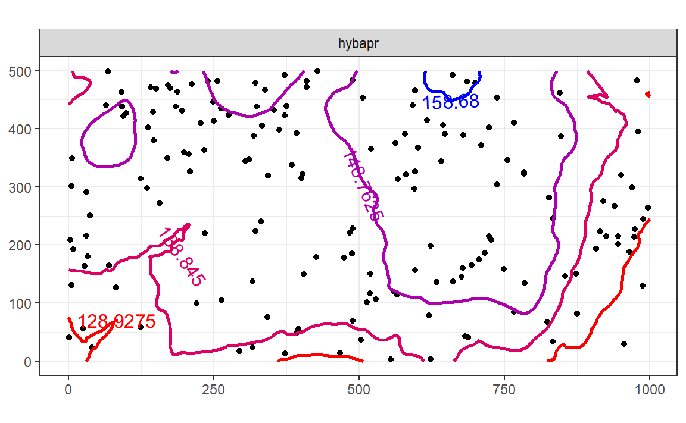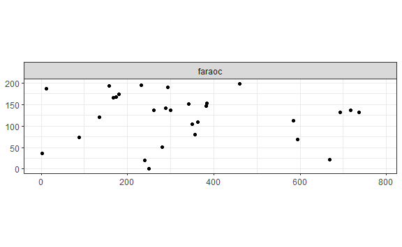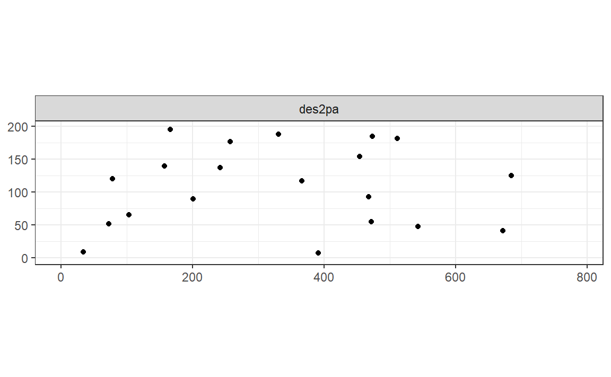
You can overwrite the default limits with the arguments xlim and ylim:
map_sp(rare_case, unique(rare_case$sp), xlim = c(0, 1000), ylim = c(0, 500))
#> $hybapr
#>
#> $faraoc
#>
#> $des2pa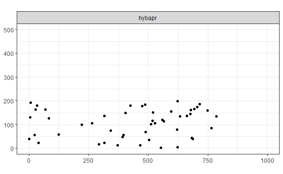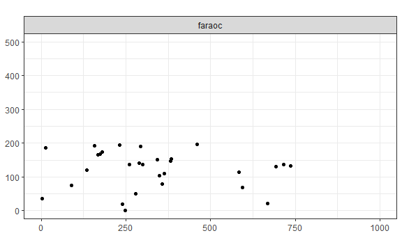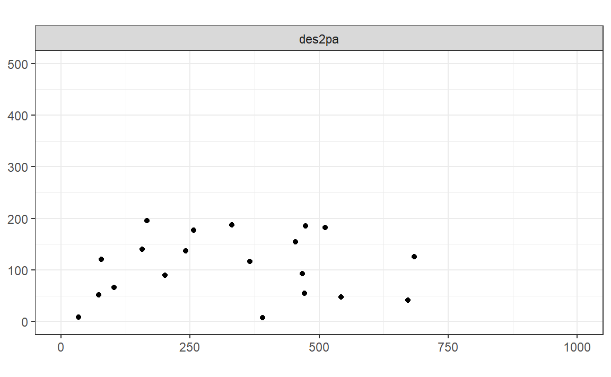
Fine Tunning
This last section shows you how to fine tune your plots. For this, you will need a couple of functions from packages other than forestr. Because you this kind of changes are rare you may forget how to do them, but you can come back to notes whenever you
Multiple Plots in One Page
To plot multiple maps on one page you can use gridExtra::maparrange().
library(gridExtra)
maps <- map_sp(census, sp_top3)
#> $hybapr
#>
#> $faraoc
#>
#> $des2pa
multipaged <- marrangeGrob(map_sp(census, sp_top3), nrow = 1, ncol = 2)
#> $hybapr
#>
#> $faraoc
#>
#> $des2pa
multipaged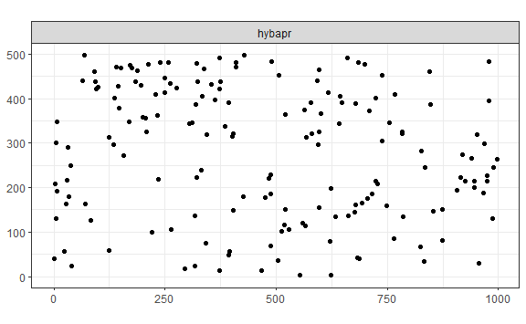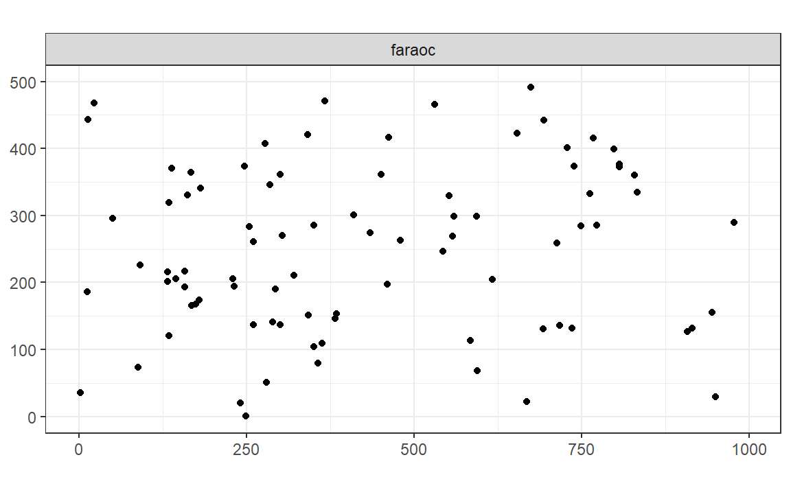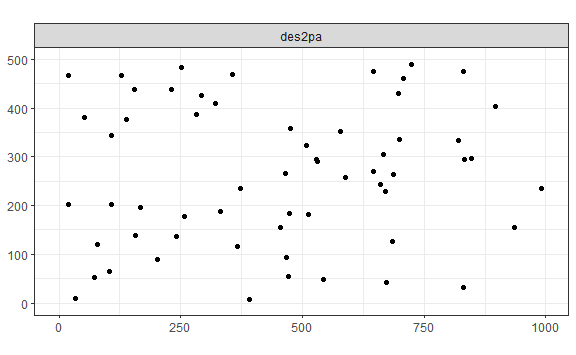

 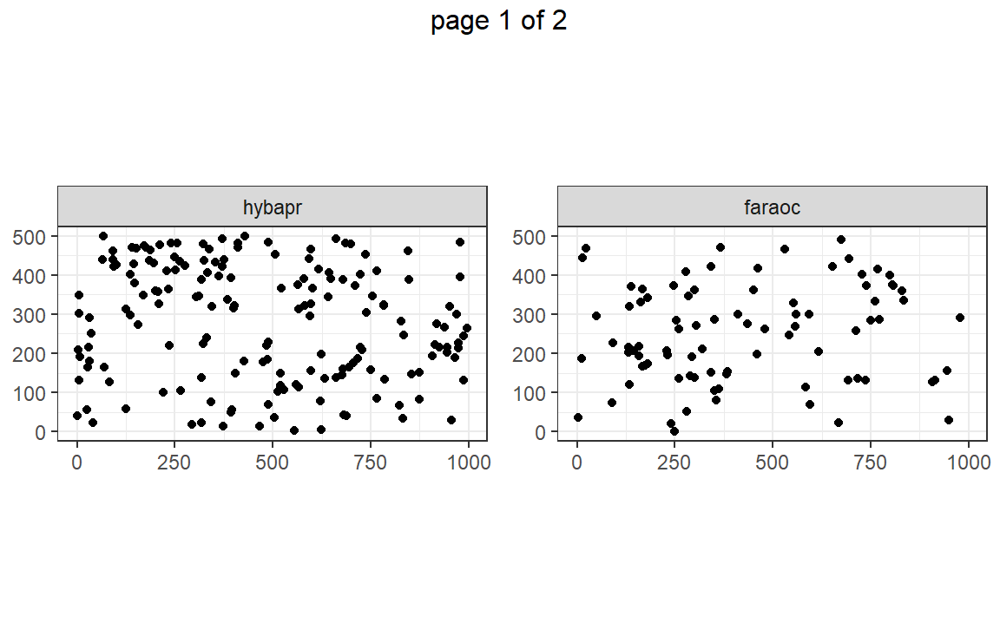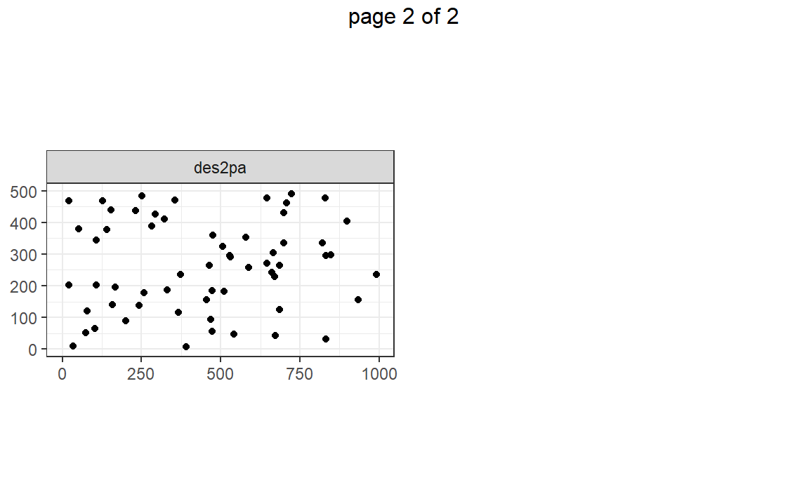
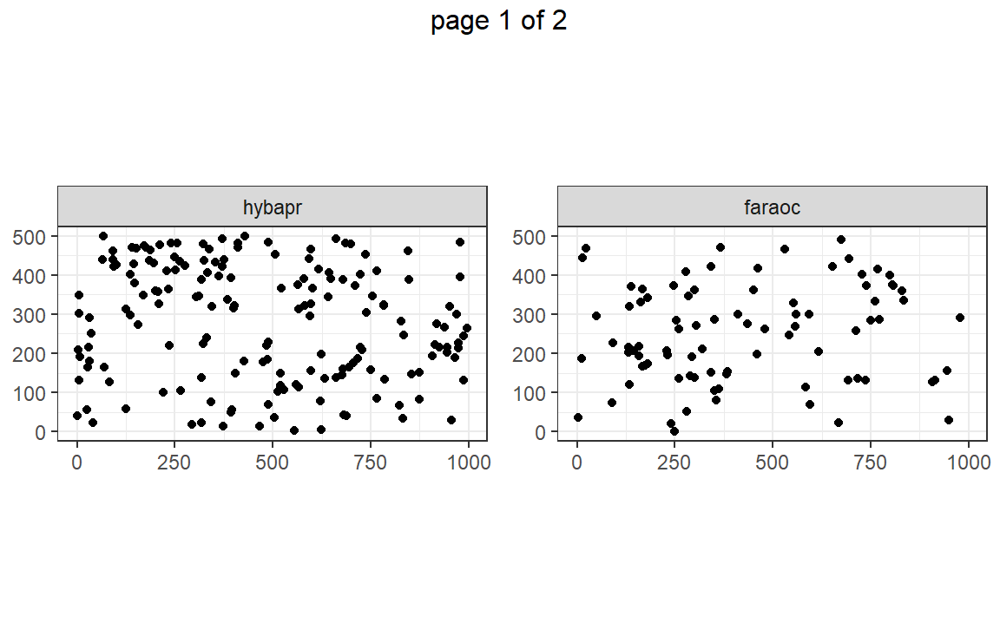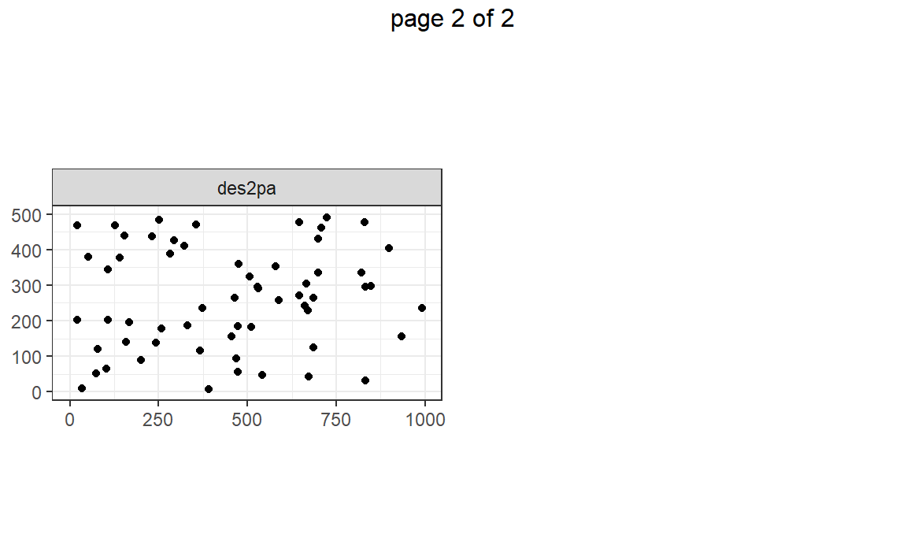
Now you can save your multi-paged maps to a .pdf
# Saving to .pdf: Option 1
ggplot2::ggsave("multi-paged.pdf", multipaged)
#> Saving 6 x 3.7 in image
# Saving to .pdf: Option 2
pdf()
multipaged
dev.off()
#> png
#> 2You can also print to other devices. If your maps span multiple pages, .png() will create one file per page.
# Saving to .png; this will create multiple files.
png()
multipaged
dev.off()
#> png
#> 2Fine Tunning the Theme
You may have noticed that the default value of the argument theme is a function from the ggplot package. Before you used a pre-made theme; but you can create your own theme with ggplot2::theme() and then pass it to map_sp() or map_sp_pdf().
# Showing only a few options; see all the options with ?ggplot2::theme()
mytheme <- ggplot2::theme(
panel.background = element_rect(fill = "lightgreen"),
panel.grid.minor = element_line(linetype = "dashed"),
strip.background = element_rect(fill = "black"),
strip.text = element_text(colour = "white"),
text = element_text(size = 25, face = "bold")
)
map_sp(census, "hybapr", theme = mytheme)
#> $hybapr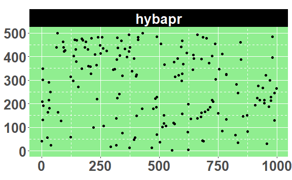
ggplot2 is the engine of map_sp() and map_sp_pdf(), but these functions are built so you can use them without knowing anything about ggplot2. Yet you may want to know more about it. ggplot2 is not an arbitrary collection of functions that you need to memorize; instead it is one implementation of The Grammar of Graphics. You can learn ggplot2 from this website; this specialized, paid book: ggplot2: Elegant Graphics for Data Analysis; or this general, free book R for Data Science. Learning always has some overhead, but the learning curve of ggplot2 is not steep. It pays off.